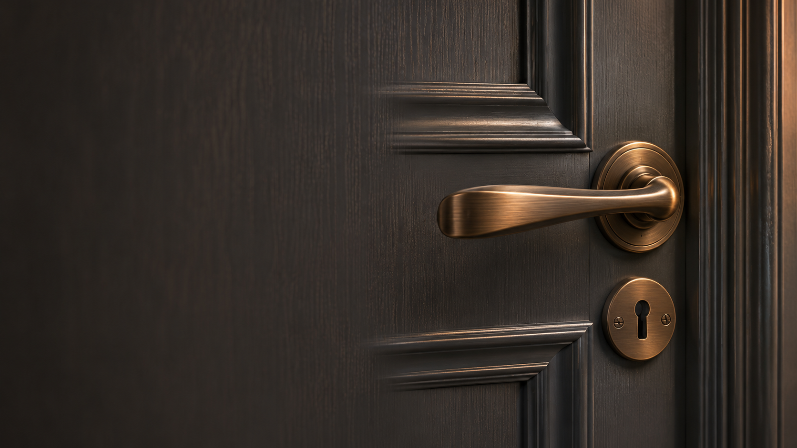
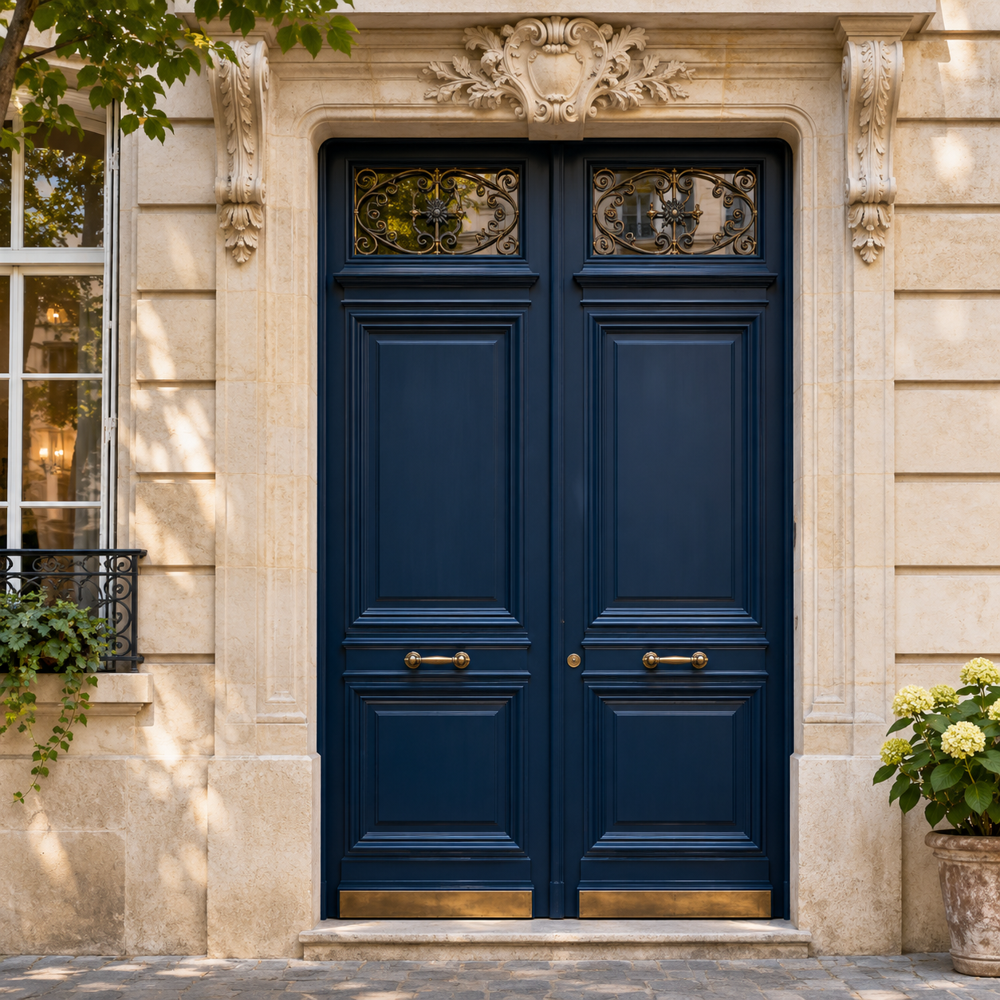
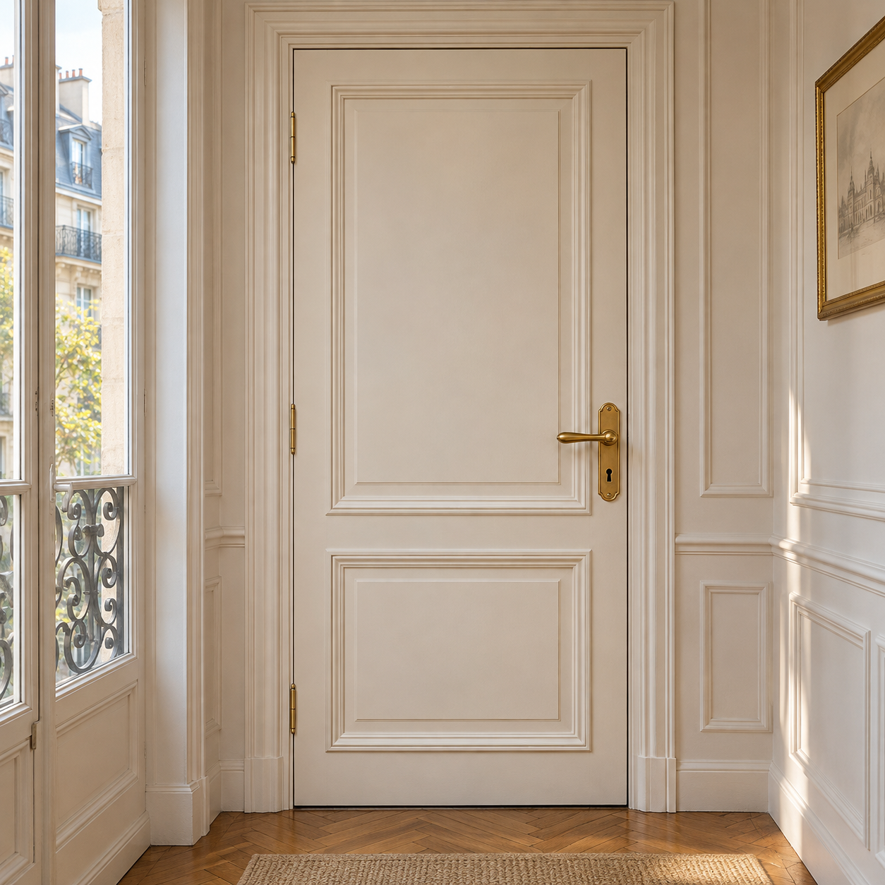
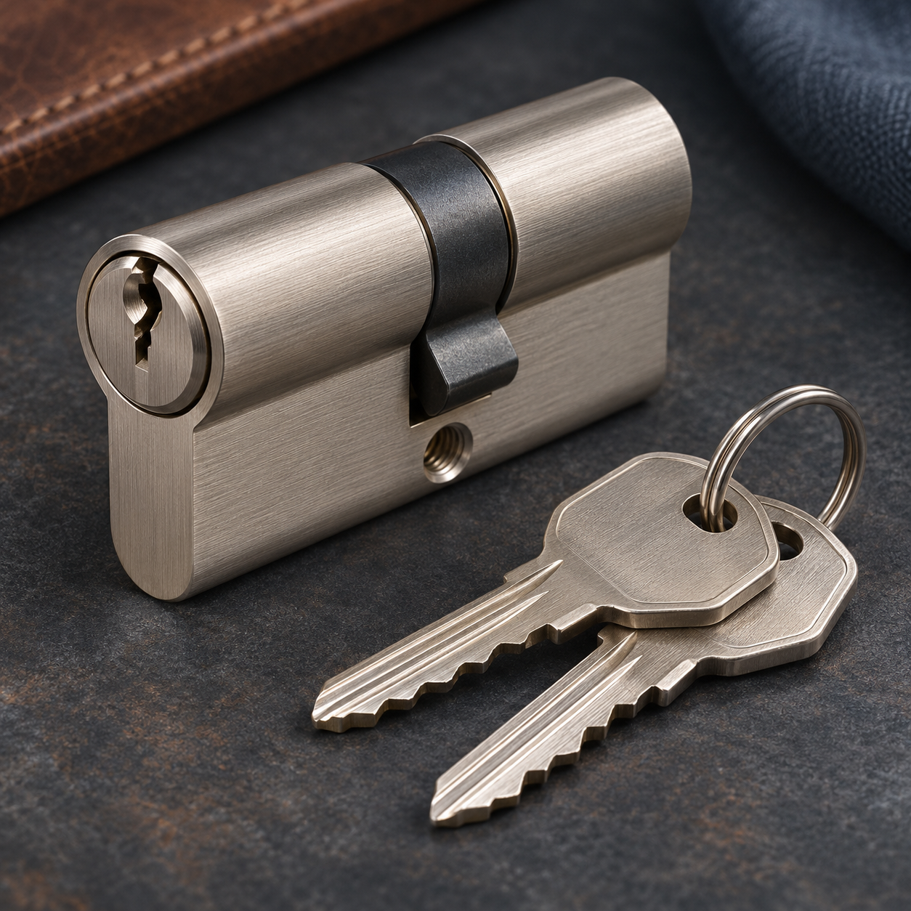
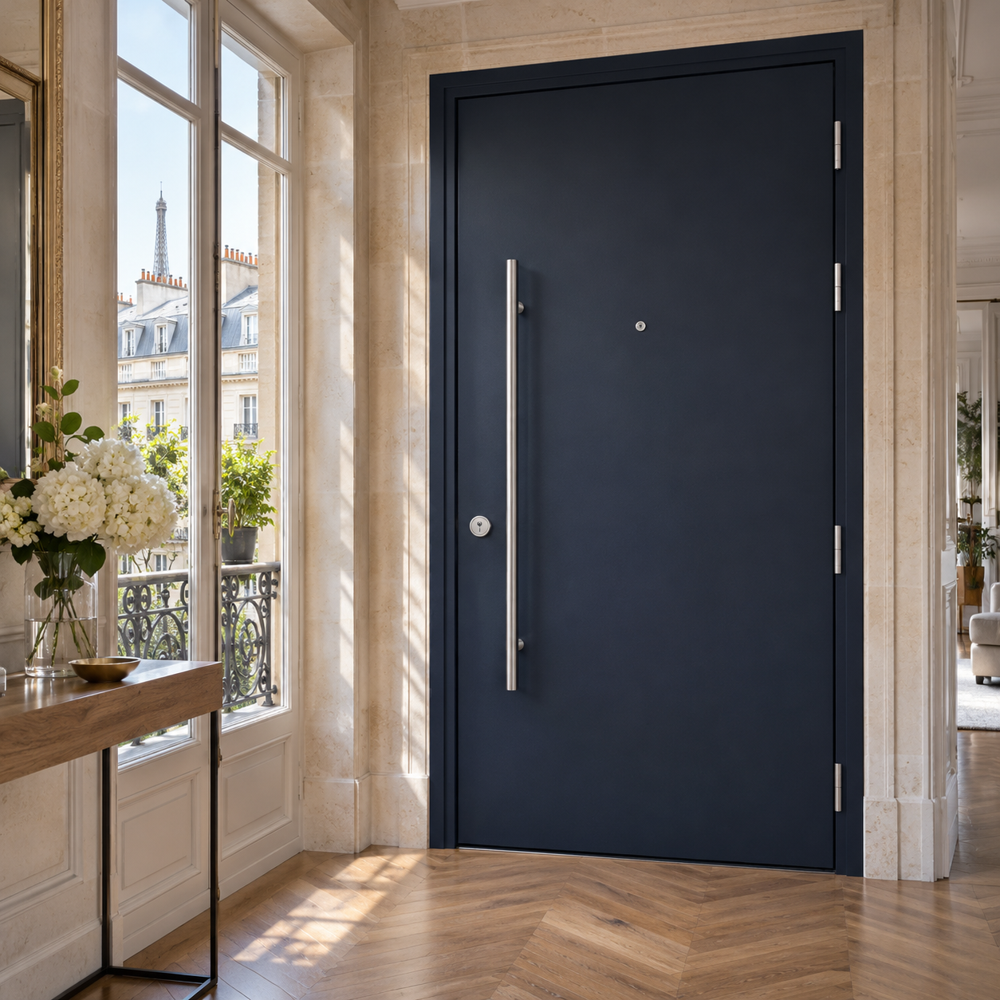
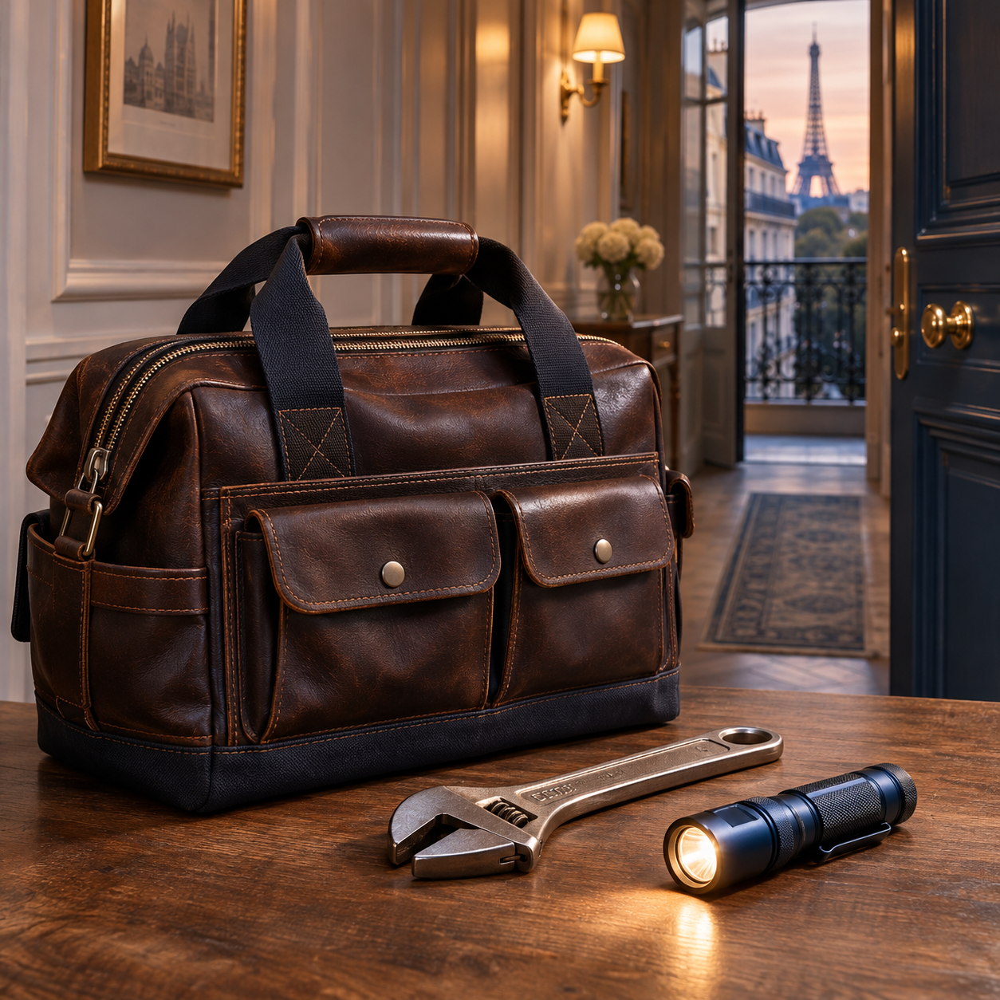

Ouverture de porte
Nous prenons en charge les portes claquées, bloquées ou verrouillées après une perte de clés. La méthode dépend de votre fermeture. Nous privilégions une ouverture qui préserve l’équipement lorsque sa configuration le permet.

Votre porte, votre sécurité.
Nous prenons soin de vos accès.
Depuis notre atelier du 48 rue Greneta, à Paris 2e, nous répondons aux besoins d’ouverture de porte, de réparation et de sécurisation. Nous intervenons dans les vingt arrondissements et en Île-de-France. Une porte claquée ou un projet de blindage ? Nous commençons par comprendre votre situation et vous annonçons le prix avant de réaliser les travaux.

Du dépannage à la protection de votre entrée, découvrez nos interventions.




Nous identifions la difficulté rencontrée.
Nous expliquons le coût avant d’intervenir.
Notre dépannage fonctionne 24h/24 et 7j/7.
Pour une porte bloquée, appelez-nous. Pour un projet, demandez un devis.
Échanger sur mon besoin →Nous prenons en charge les portes claquées, bloquées ou verrouillées après une perte de clés. La méthode dépend de votre fermeture. Nous privilégions une ouverture qui préserve l’équipement lorsque sa configuration le permet.
Nous remplaçons les serrures, cylindres et verrous. Selon l’état du mécanisme, un changement de cylindre peut suffire. Nous vous orientons vers une solution compatible avec votre porte, son usage et votre besoin de sécurité.
Nous étudions le blindage de votre porte existante ou la pose d’un bloc-porte. Tôle intérieure, cornières et renforts sont envisagés selon l’état de l’huisserie. Le projet tient compte de votre bâtiment et de ses contraintes.
Appelez-nous avec votre adresse, le type de porte et les symptômes observés. Pour une installation, décrivez les équipements à remplacer. Nous vous indiquons comment transmettre les photos utiles pour préciser votre demande et préparer un devis.